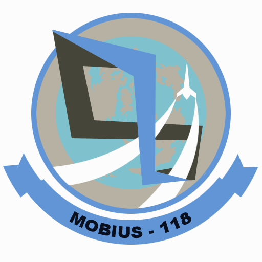

The Toast
Boyd's has been in the business since 2003 selling toast which pretty much changed the world. When you eat your toast, your mouth is taken on an enchanting journey of awe and wonder. Go ahead,
take a bite.
A Little History
Matthew Boyd Inman was sitting in his kitchen one day eating bread. He thought to himself "This is super lame! I want this bread to be crunchy and delightful." From there Boyd's Toast was born, starting a revolution that would change the world forever.
Click here
The Experience
Imagine Godzilla unleashing a flaming fart onto some bread. Now imagine what the resulting toast would taste like, but ten thousand times better. That pretty much sums up the experience of having your mouth enchanted by our delicious toast.
View our flavors, you know you want to.
 Code On GitHub
Code On GitHub